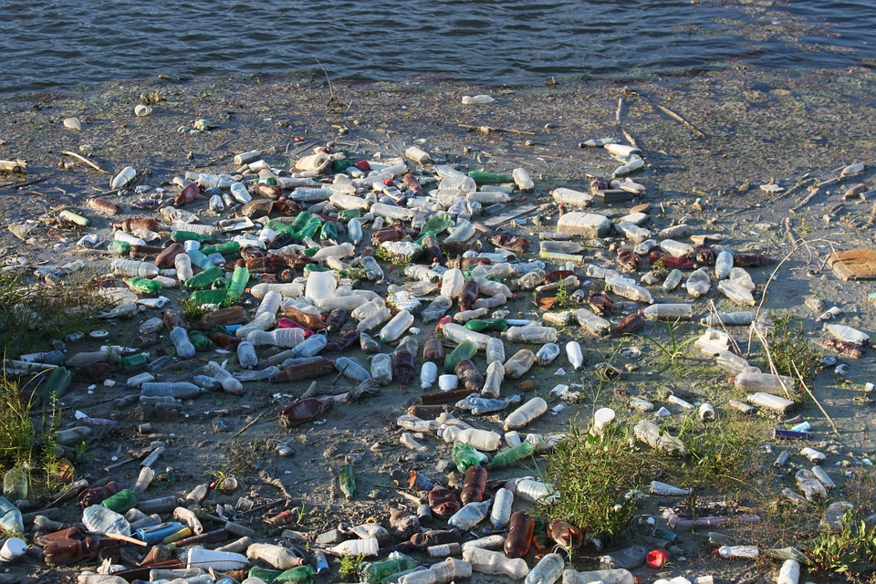

GREAT JOB! You can recycle plastic water bottles and aluminum cans by putting them into their proper containers.

Recycling plastic water bottles is a must because plastic is not biodegradable.
Plastic water bottles pollute the lands and waters they lay in, and therefore, it is much safer to recycle this material.
The manufacturing and destruction of plastic is also very harmful to the environment; if possible, invest in a reusable water bottle.